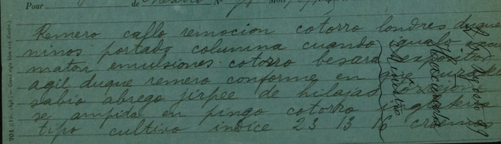

At a glanceExisting decipherment · partial (93% of the cipher)
- The telegram
- A French telegram form (Mexico no. 78, “Mots 98”, Via Anglo, Paris stamp 26 August 1899) from Roberto Núñez, under-secretary of Finance, to the minister José Y. Limantour at 16 avenue Friedland, Paris; 114 units, 65 of them code words.
- Where
- CEHM-Carso, Mexico City, Fondo CDLIV (Colección José Y. Limantour), CDLIV.1a.1883.38.9926, five images. Not on DECODE. Part of catalogue entry 1461; its 1905 items are not read here.
- The cipher
- A word code: only some words are coded, in Spanish dictionary words that keep Spanish endings (jirpeo = indicó, jirpee = indique); the rest is clear Spanish.
- How it was read
- The archive’s record says “sin traducción”, but a contemporary translation is filed as the next two numbers (9927, a pencil draft, and 9928, a fair copy). It gives 36 code values (36 of the 65 code tokens; with the hole ampida, 37 tokens have no value from the key); a key frozen from other telegrams of the same code, each with its plain text, gives 28 more and agrees with the translation in every one.
- What it says
- The President has agreed a loan of 4 millions from the Banco de Londres; surplus funds are to go in gold to the Bank of England; Camacho asks to have the new bonds printed in the United States, which the President fears could draw an injunction against Morgan.
- Still open
- One code word (ampida) is blank in the translation too; two telegraphed words (te se) have no counterpart; five words are supplied by the translator. Counting those, 93.3% of words read, under the 95% bar. 36 code values rest on one source (the 37th token, ampida, is the hole). Frozen before the comparison by the contributor’s record.
- Credit
- Transcription, the finding of the translation, the frozen key and the reading by WAINUT with AI language-model agents, from the CEHM images; the translation is the work of the time. The project re-ran the held-out test and compared the first lines with the scan.
01 The telegram
The record (CEHM ficha 148376) calls the item “Texto codificado. Sin traducción”, which is true of that record. But the file holds the translation under the next two numbers, CDLIV.1a.1883.38.9927 (a pencil draft on Elysée-Palace-Hotel telegram paper, two images) and 9928 (a fair copy headed “Traducción”, signed Núñez, one image). Their text follows the code telegram word for word, so they are the translation of 9926 and not of another telegram. The same code was used by Núñez and Limantour in August 1899 (9922, 9926, 9929, 9930); it is not the Speyer & Co. code of 1905.

02 The code
Code words keep Spanish endings (impulsarlo = hacerlo, impulsése = hágase, intitular = imprimir, besarsele = abonársele); one value can take two code words (garlopas abocados = E.U.); most figures go in clear (23 13/16, 24), but “4 millones” and “2 y 1/4” are coded. No codebook was found in the file: the key is rebuilt from glossed telegrams.
03 The test
The frozen key (90 entries; the file has 97 lines, of which 6 are comments and 1 is the header row) was built first from three other telegrams of the same code, each with its plain text on the same sheet: 9922 (Núñez, 10 August, code and translation), 9929 (Limantour’s draft of 28 August with plain and code words line by line, his answer to this telegram) and 9930 (Núñez, 31 August, code and “Traducción”). It covers 28 of the 65 code-word tokens of 9926 (19 distinct code words; 23 tokens by the same code word, 5 by the same code root with another ending), and all 28 give the value that the contemporary translation gives at the same place. The other 37 tokens are code words that do not occur in the three sources.
That test does not use the translation of 9926, so it is independent of the source of the other 36 values. That the key was frozen before 9926 was compared with the translation rests on the contributor’s record (the file header; one commit, no outside timestamp). The 36 other values come only from aligning the telegram with its translation, token by token, so they have no second source.
04 The reading
Presidente acordó préstamo Banco {de} Londres 4 millones. Pasado año, cuando Gobierno disponga libremente depósitos, Banco abonará 2 y 1/4. Presidente conforme en que cantidad que Ud. indique de fondos sobrantes se [?depositen] en oro Banco Inglaterra, tipo cambio hoy 23 13/16. Creemos que á 24 ó más podría {aquí} irse convirtiendo efectivo en oro y remitirlo Camacho para su guarda Banco Inglés, pero en todo caso usted indicará la manera más conveniente hacer esa situación. Camacho pide autorización bonos nuevos {empréstito} se impriman {en} E.U. Presidente llama atención de Ud. si no obstante que bonos no serían acabados careciendo {de} firmas E.U., pudiera ejercitarse proceso semejante á providencia precautoria contra Morgan, ocasionándonos algún estorbo. Sírvase resolver. Núñez
Braces mark words the translator added; the square brackets a guess. In English: the President has agreed a loan of 4 millions from the Bank of London; a year hence, when the Government can freely dispose of the deposits, the Bank will pay 2 and a quarter. The President agrees that an amount Limantour is to name from the surplus funds be [placed] in gold in the Bank of England, exchange today 23 13/16; we think that at 24 or more cash could be turned into gold here and sent to Camacho for safekeeping at the English bank, but in any case Limantour is to name the most suitable way. Camacho asks leave to print the new loan’s bonds in the United States; the President draws attention to the possibility that, the bonds being unfinished and unsigned, something like an injunction against Morgan could cause difficulty. Please decide. Limantour’s answer of 28 August (9929) takes up exactly these points. That Camacho is the financial agent and the bonds those of the 1899 conversion is background that the telegram does not give and that was not checked here.
Counted by the README rule: 114 telegram units (43 clear words, 4 clear numbers, 28 code words valued by the frozen key, 36 valued only by the translation, one guess and two words not rendered) plus the 5 words the translator supplied make 119. The holes are the guess for ampida, the two words te se that the translation does not render, and the 5 supplied words: 111 of 119, 93.3%. The contributor’s figure, 111 of 114 units (97%), leaves the supplied words out. The sentences read coherently (grade A), but the share is under 95%, so the telegram is read in part.
05 What remains uncertain
- ampida (line 6) is blank in the translation too (“fondos sobrantes se ___ en oro”); the context and Limantour’s answer suggest “depositen” or “inviertan”, marked as a guess (no key).
- te se (line 16): two telegraphed words with no counterpart in the translation, possibly a transmission error.
- Three code words are not certain on the scan: curadela (under the pencil docket), pareciendo.. (ending under the watermark) and torrejones. Two sign doubts from the second reader: serian may begin with a v and rolliza may end in o; neither changes the reading.
- pasado año is rendered literally as “after a year” (a year having passed); “next year” is possible.
- Thirty-six code values rest on one contemporary translation, with no second source and no codebook in the file. Other August 1899 telegrams of file 38 may share the code (9906-9908, 9923); images of 9906-9908 were fetched but not used.
- The scan was compared again at the integration only for the first three lines; a second reader had read 17 of the 22 lines from the scans before opening the transcription.
- Prior art: the catalogue entry and the record say “sin traducción” and name neither 9927 nor 9928; a web search found general work on the 1899 conversion loan but no edition of this telegram.
Full texts
The transcription and the decryption of every document on this page, so that the reading can be used and checked. Short files are shown here; all are in the repository.
Núñez to Limantour, 26 Aug 1899: loan of the Banco de Londres, Bank of England deposit, printing of the bonds in the U.S. read in part
The President has agreed a loan of 4 millions from the Banco de Londres, paying 2 1/4 on deposits once the Government can dispose of them freely; surplus funds, in an amount Limantour is to name, are to go in gold to the Bank of England (exchange today 23 13/16; at 24 or more cash could be converted here into gold and sent to Camacho to be kept at the English bank), Limantour to say how; Camacho asks authority to have the bonds of the new loan printed in the U.S.; the President asks whether unfinished, unsigned bonds in the U.S. might lead to something like an injunction against Morgan. Please decide.
Builds coherent sentences, but under the read bar of 95% of words read as sense (93% here); the holes are marked in the reading.
Transcription
# CEHM CDLIV.1a.1883.38.9926, Roberto Nunez (Mexico) to J. Y. Limantour (16 avenue Friedland, Paris), 26 Aug 1899 (Paris arrival stamp 26 Aout 99), French telegram form No 701, Via Anglo; the clerk counted 98 words ("Mots 98").
# Reconciled from pass 1 and pass 2 on the images. Words as written by the receiving clerk, lower case, accents left out.
# Disagreements settled:
# L02 word 5: pass 1 "iguala", pass 2 "igualo"; the last letter is an o on the 2.2x crop (same as "igualo" in 9922 and 9930).
# L04 word 8: pass 1 "cur?la", pass 2 "curadela"; the fourth and fifth letters sit under the pencil docket "Hacienda"; "curadela" kept, d and e not certain.
# L20 word 4: "pareciendo" plus two or three letters hidden under the CEHM watermark; written "pareciendo.." (ending not read).
# Open after the blind review of 12 Nov 2026 (signs checked on the scans for L01-L07, L14-L22): L17 word 6 "serian" may begin
# with a v ("verian"); L19 word 6 "rolliza" may end in o. Neither changes the reading (a clear word; a code word valued from 9928).
# The pencil lines written across L02-L07 ("Ministro / Hacienda / 26 Agosto 99") are the recipient's docket, not part of the telegram.
L01 remero caflo remocion cotorro londres duquesa
L02 ninos portado columna cuando igualo excuse
L03 mator emulsiones . cotorro besara expositor
L04 agil duque remero conforme en que curadela
L05 sabio abrego jirpee de hilajas torrejones
L06 se ampida en pingo cotorro inglaterra
L07 tipo cultivo indice 23 13 16 creemos
L08 sabio baba 24 o mas rebajara irse
L09 divirtiendo falange finca pingo y
L10 sonsacarlo camacho pleno su impida
L11 cotorro lampuga pero en todo caso usted
L12 indicara la manera mas conveniente
L13 impulsa galopina tornaguia camacho
L14 presta coraza crimenes ovejuno
L15 intitularse garlopas abocados remero
L16 mete contusion de abrego te se si no
L17 obstante que crimenes no serian acabados
L18 curvando firmas garlopas abocados pudiera
L19 ejercitarse resonante ternario baba rolliza
L20 precautoria disento morgan pareciendo..
L21 cincha estorbo sirvase supurar
L22 nunezDecryption
# Mechanical decryption of CEHM CDLIV.1a.1883.38.9926 (scripts/decrypt.py from transcription_9926.txt + key.tsv). # UPPER CASE = value of a code word from key.tsv; lower case = clear word as telegraphed; [...] = code word with no value. L01 PRESIDENTE ACORDO PRESTAMO BANCO londres 4 L02 MILLONES PASADO ANO cuando GOBIERNO DISPONGA L03 LIBREMENTE DEPOSITOS . BANCO ABONARA 2 L04 Y 1/4 PRESIDENTE conforme en que CANTIDAD L05 QUE UD. INDIQUE de FONDOS SOBRANTES L06 se [...] en ORO BANCO inglaterra L07 tipo CAMBIO HOY 23 13 16 creemos L08 QUE A 24 o mas PODRIA irse L09 CONVIRTIENDO EFECTIVO EN ORO y L10 REMITIRLO camacho PARA su GUARDA L11 BANCO INGLES pero en todo caso usted L12 indicara la manera mas conveniente L13 HACER ESA SITUACION camacho L14 PIDE AUTORIZACION BONOS NUEVOS L15 SE IMPRIMAN E.U. PRESIDENTE L16 LLAMA ATENCION de UD. te se si no L17 obstante que BONOS no serian acabados L18 CARECIENDO firmas E.U. pudiera L19 ejercitarse PROCESO SEMEJANTE A PROVIDENCIA L20 precautoria CONTRA morgan OCASIONANDONOS L21 ALGUN estorbo sirvase RESOLVER L22 nunez
Reading
# Reading of CEHM CDLIV.1a.1883.38.9926 (Roberto Núñez to J. Y. Limantour, Mexico, 26 Aug 1899)
Spanish, line by line as telegraphed. Built from `decryption_9926.txt`; every departure is marked:
`{+x}` word added (supplied by the contemporary translation 9928 or by grammar), `{-x}` telegraphed word left out,
`{a/b}` decryption a written as b, `[?x]` guess for a code word with no value. Code values come from `key.tsv`
(28 tokens from the independent frozen key, 36 from the contemporary translation of this telegram, filed as 9927/9928).
## Marked reading (line by line as telegraphed)
```marked
L01 | Presidente acordó préstamo Banco {+de} Londres 4
L02 | millones. Pasado año, cuando Gobierno disponga
L03 | libremente depósitos, Banco abonará 2
L04 | y 1/4. Presidente conforme en que cantidad
L05 | que Ud. indique de fondos sobrantes
L06 | se [?depositen] en oro Banco Inglaterra,
L07 | tipo cambio hoy {23 13 16/23 13/16}. Creemos
L08 | que á 24 ó más podría {+aquí} irse
L09 | convirtiendo efectivo en oro y
L10 | remitirlo Camacho para su guarda
L11 | Banco Inglés, pero en todo caso usted
L12 | indicará la manera más conveniente
L13 | hacer esa situación. Camacho
L14 | pide autorización bonos nuevos {+empréstito}
L15 | se impriman {+en} E.U. Presidente
L16 | llama atención de Ud. {-te se} si no
L17 | obstante que bonos no serían acabados
L18 | careciendo {+de} firmas E.U., pudiera
L19 | ejercitarse proceso semejante á providencia
L20 | precautoria contra Morgan, ocasionándonos
L21 | algún estorbo. Sírvase resolver.
L22 | Núñez
```
## Running text (Spanish)
Presidente acordó préstamo Banco de Londres 4 millones. Pasado año, cuando Gobierno disponga libremente depósitos, Banco abonará 2 y 1/4. Presidente conforme en que cantidad que Ud. indique de fondos sobrantes se [?depositen] en oro Banco Inglaterra, tipo cambio hoy 23 13/16. Creemos que á 24 ó más podría aquí irse convirtiendo efectivo en oro y remitirlo Camacho para su guarda Banco Inglés, pero en todo caso usted indicará la manera más conveniente hacer esa situación. Camacho pide autorización bonos nuevos empréstito se impriman en E.U. Presidente llama atención de Ud. si no obstante que bonos no serían acabados careciendo de firmas E.U., pudiera ejercitarse proceso semejante á providencia precautoria contra Morgan, ocasionándonos algún estorbo. Sírvase resolver.
Núñez
English: `translation_9926.md`.Translation
# Translation of CEHM CDLIV.1a.1883.38.9926 (Roberto Núñez to J. Y. Limantour, Mexico, 26 Aug 1899) English, with the same hole as the Spanish reading (`[?deposited]` stands for the code word *ampida*, which the contemporary translator also left blank). Two telegraphed words (*te se*, line 16) are not rendered, as in the contemporary translation. The President has agreed [to] a loan [from the] Bank of London [of] 4 millions. After a year (*pasado año*, literally "a year having passed"), when the Government freely disposes of [its] deposits, the Bank will pay 2 1/4 [per cent interest]. The President agrees that the amount of surplus funds that you indicate be [?deposited] in gold [at the] Bank of England, exchange rate today 23 13/16. We believe that at 24 or more it could gradually be converted here from cash into gold and sent to Camacho for its safe keeping [at the] English Bank; but in any case you will indicate the most convenient way to handle that position. Camacho asks authorization [for the] bonds [of the] new [loan to] be printed in the U.S. The President calls your attention [to whether], even though the bonds would not be finished, lacking signatures, [in the] U.S., a proceeding similar to a precautionary injunction (*providencia precautoria*) could be brought against Morgan, causing us some obstruction. Please decide. Núñez
Key: key.tsv
06 Sources
- CEHM-Carso (Centro de Estudios de Historia de México, Fundación Carlos Slim), Fondo CDLIV, file 38: 9926 (the telegram, five images), 9927 and 9928 (the translation), 9922, 9929 and 9930 (the telegrams used for the frozen key); images from the CEHM viewer, fetched 12 November 2026, which refused nothing.
- Transcription, key and reading by WAINUT (pull request #464), in
targets/nunez1899.
The key, the transcriptions, the reading and the checks are in targets/nunez1899.
Cite this page
WAINUT and Daniel Bourdeau, “Roberto Núñez to José Y. Limantour, Mexico, 26 August 1899”, Cyphersolver, posted 12 November 2026, https://cyphersolver.com/nunez1899.html.